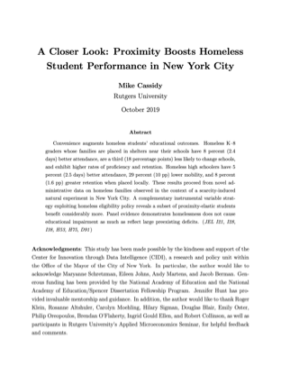

Job Market Paper
A Closer Look: Proximity Boosts Homeless Student Performance in New York City
October 2019
Convenience augments homeless students’ educational outcomes. Homeless K–8 graders whose families are placed in shelters near their schools have 8 percent (2.4 days) better attendance, are a third (18 percentage points) less likely to change schools, and exhibit higher rates of proficiency and retention. Homeless high schoolers have 5 percent (2.5 days) better attendance, 29 percent (10 pp) lower mobility, and 8 percent (1.6 pp) greater retention when placed locally. These results proceed from novel administrative data on homeless families observed in the context of a scarcity-induced natural experiment in New York City. A complementary instrumental variable strategy exploiting homeless eligibility policy reveals a subset of proximity-elastic students benefit considerably more. Panel evidence demonstrates homelessness does not cause educational impairment as much as reflect large preexisting deficits.
Works In Progress
2019
A Home Away From (or Nearby) Home: Homeless Family Responses to Exogenous Benefit Variation in New York City
2019
Childhood Running, Academic Performance, and Health
2019
The Effects Breastfeeding on Childhood and Young Adult Outcomes
Research Statement
TBD research statement